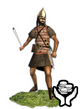
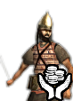
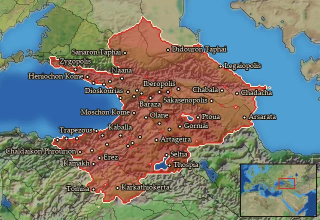

RTR: Imperium Surrectum
RTR: Imperium SurrectumMercenary Caucasian Slingers


Mercenary. Hired from a regional pool, not recruited from a building.
Class: missile · Category: infantry · Men per unit: 40
Description
Caucasia is a mountainous land encompassing the modern nations of Armenia, Georgia, and Azerbaijan. Due to its rocky terrain, it tempts those who live there to just pick up a rock and fling it at a Roman (or Parthian) head. These are the men who have taken up flinging rocks as a profession, and you better believe it, these men are not to be underestimated. I learned that the hard way… They wear the signature Armenian Hershey's Kisses helmet, and go into battle with some metal plating, allowing them to dish out as well as take some damage.
Stats
| Rank in roster | Rank in roster | Rank in roster | Rank in roster | ||||||||
|---|---|---|---|---|---|---|---|---|---|---|---|
| Men per unit | 40 | ███······· 31% | Attack | 6 | █········· 5% | Charge bonus | 1 | █········· 4% | Defence | 17 | █········· 13% |
| · armour | 8 | █████····· 47% | · defence skill | 9 | █········· 3% | · shield | 0 | █········· 0% | Morale | 7 | █········· 11% |
| Discipline | Low | Training | Untrained | Upkeep per turn | 477 dn | ██········ 19% |
Weapons
| Primary | Secondary | Primary | Secondary | Primary | Secondary | Primary | Secondary | ||||
|---|---|---|---|---|---|---|---|---|---|---|---|
| Attack | 6 | 3 | Charge bonus | 1 | 1 | Type | missile · archery | melee · simple | Damage | blunt | piercing |
| Projectile | stone | — | Range | 140 | — | Ammunition | 35 | — |
Defence
| Primary | Secondary | Primary | Secondary | Primary | Secondary | Primary | Secondary | ||||
|---|---|---|---|---|---|---|---|---|---|---|---|
| Total | 17 | — | Armour | 8 | — | Defence skill | 9 | — | Shield | 0 | — |
Condition and terrain
| Hit points | 1 | Ground: scrub / sand / forest / snow | 0 / -1 / 0 / -1 | Charge distance | 30 | Formations | Square |
Technical stats
| Time between blows (primary / secondary) | 2.5 s / 2.5 s | Extra fatigue in hot climates | 0 | Collision mass per man (1.0 is normal) | 1.11 | Spacing between men: close / loose | 1 × 2.4 m / 1.8 × 4.32 m |
| Default ranks | 5 |
In battle: Can hide in long grass · Very good stamina
Where to hire it
Mercenaries are hired from a regional pool, not recruited from a building. This unit is offered by 1 pool covering 47 regions, at 3,945 dn to hire and 0 experience.

At least one of those pools sells to any faction that has an army in range, with no faction restriction.
The 47 regions where this unit appears in a mercenary pool
Akilisene · Albania · Anatolike Albania · Ano Araxes · Ano Euphrates · Basoropeda · Boreia Lychnitis · Chaldaia-Pontos · Chalybia · Chorzene · Didouria-Touskia · Drilaia · Egritike · Hellenike Makronia · Hellenike Mossynoikia · Hellenike Tibarenia · Heniochia · Hesperos Iberia · Hesperos Sophene · Iberia · Kambysene-Gogarene · Karanitis · Kaspiane-Ouitia · Kerketaia · Kolchis · Koraxia · Lazia · Legaia-Gelaia · Lychnitis · Makronia · Megale Armenia · Megas Pityous · Mikra Armenia · Moschia · Mossynoikia · Notia Kolchis · Phasis · Sakasene · Sanaraia · Skythenia
…and 7 more.